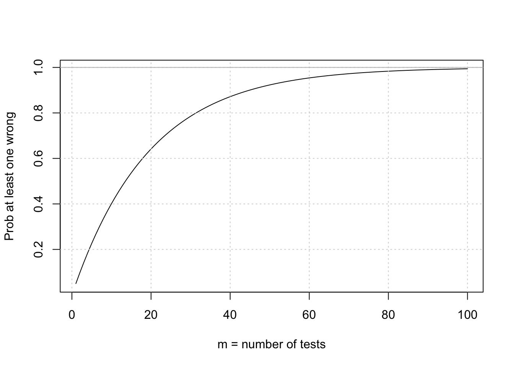

L3-Multiple-Testing
Hae Kyung Im
2020-01-13
Last updated: 2020-01-15
Checks: 6 0
Knit directory: hgen471/
This reproducible R Markdown analysis was created with workflowr (version 1.3.0). The Checks tab describes the reproducibility checks that were applied when the results were created. The Past versions tab lists the development history.
Great! Since the R Markdown file has been committed to the Git repository, you know the exact version of the code that produced these results.
Great job! The global environment was empty. Objects defined in the global environment can affect the analysis in your R Markdown file in unknown ways. For reproduciblity it’s best to always run the code in an empty environment.
The command set.seed(20200105) was run prior to running the code in the R Markdown file. Setting a seed ensures that any results that rely on randomness, e.g. subsampling or permutations, are reproducible.
Great job! Recording the operating system, R version, and package versions is critical for reproducibility.
Nice! There were no cached chunks for this analysis, so you can be confident that you successfully produced the results during this run.
Great! You are using Git for version control. Tracking code development and connecting the code version to the results is critical for reproducibility. The version displayed above was the version of the Git repository at the time these results were generated.
Note that you need to be careful to ensure that all relevant files for the analysis have been committed to Git prior to generating the results (you can use wflow_publish or wflow_git_commit). workflowr only checks the R Markdown file, but you know if there are other scripts or data files that it depends on. Below is the status of the Git repository when the results were generated:
Ignored files:
Ignored: .DS_Store
Ignored: .Rhistory
Ignored: .Rproj.user/
Ignored: docs/.DS_Store
Untracked files:
Untracked: analysis/L3-Bonferroni.Rmd
Untracked: analysis/L4-power.Rmd
Untracked: docs/figure/L3-Bonferroni.Rmd/
Untracked: docs/figure/L4-power.Rmd/
Note that any generated files, e.g. HTML, png, CSS, etc., are not included in this status report because it is ok for generated content to have uncommitted changes.
These are the previous versions of the R Markdown and HTML files. If you’ve configured a remote Git repository (see ?wflow_git_remote), click on the hyperlinks in the table below to view them.
| File | Version | Author | Date | Message |
|---|---|---|---|---|
| Rmd | ed556cf | Hae Kyung Im | 2020-01-15 | wflow_publish(all = TRUE) |
| html | ed556cf | Hae Kyung Im | 2020-01-15 | wflow_publish(all = TRUE) |
| Rmd | e4490eb | hakyimlab | 2020-01-14 | winners |
| html | e4490eb | hakyimlab | 2020-01-14 | winners |
| Rmd | b5bd1ad | hakyimlab | 2020-01-14 | winners |
| html | b5bd1ad | hakyimlab | 2020-01-14 | winners |
| html | 0734fad | hakyimlab | 2020-01-14 | null p winners curse |
| Rmd | 0c53a5b | hakyimlab | 2020-01-14 | null p winners curse |
| html | 0c53a5b | hakyimlab | 2020-01-14 | null p winners curse |
library(tidyverse)Registered S3 methods overwritten by 'ggplot2':
method from
[.quosures rlang
c.quosures rlang
print.quosures rlang── Attaching packages ───────────────────────────── tidyverse 1.2.1 ──✔ ggplot2 3.1.1 ✔ purrr 0.3.2
✔ tibble 2.1.2 ✔ dplyr 0.8.1
✔ tidyr 0.8.3 ✔ stringr 1.4.0
✔ readr 1.3.1 ✔ forcats 0.4.0── Conflicts ──────────────────────────────── tidyverse_conflicts() ──
✖ dplyr::filter() masks stats::filter()
✖ dplyr::lag() masks stats::lag()fastlm = function(xx,yy)
{
## compute betahat (regression coef) and pvalue with Ftest
## for now it does not take covariates
df1 = 2
df0 = 1
ind = !is.na(xx) & !is.na(yy)
xx = xx[ind]
yy = yy[ind]
n = sum(ind)
xbar = mean(xx)
ybar = mean(yy)
xx = xx - xbar
yy = yy - ybar
SXX = sum( xx^2 )
SYY = sum( yy^2 )
SXY = sum( xx * yy )
betahat = SXY / SXX
RSS1 = sum( ( yy - xx * betahat )^2 )
RSS0 = SYY
fstat = ( ( RSS0 - RSS1 ) / ( df1 - df0 ) ) / ( RSS1 / ( n - df1 ) )
pval = 1 - pf(fstat, df1 = ( df1 - df0 ), df2 = ( n - df1 ))
res = list(betahat = betahat, pval = pval)
return(res)
}
## pvalue vs uniform
qqunif =
function(p,BH=T,CI=T,...)
{
p=na.omit(p)
nn = length(p)
xx = -log10((1:nn)/(nn+1))
plot( xx, -sort(log10(p)),
xlab=expression(Expected~~-log[10](italic(p))),
ylab=expression(Observed~~-log[10](italic(p))),
cex.lab=1.4,mgp=c(2,1,0),
... )
abline(0,1,col='gray')
if(BH)
{
abline(-log10(0.05),1, col='red',lty=1)
abline(-log10(0.10),1, col='orange',lty=2)
abline(-log10(0.25),1, col='yellow',lty=3)
legend('bottomright', c("FDR = 0.05","FDR = 0.10","FDR = 0.25"),
col=c('red','orange','yellow'),lty=1:3, cex=1)
abline(h=-log10(0.05/nn)) ## bonferroni
}
if(CI)
{
## create the confidence intervals
c95 <- rep(0,nn)
c05 <- rep(0,nn)
## the jth order statistic from a
## uniform(0,1) sample
## has a beta(j,n-j+1) distribution
## (Casella & Berger, 2002,
## 2nd edition, pg 230, Duxbury)
## this portion was posted by anonymous on
## http://gettinggeneticsdone.blogspot.com/2009/11/qq-plots-of-p-values-in-r-using-ggplot2.html
for(i in 1:nn)
{
c95[i] <- qbeta(0.95,i,nn-i+1)
c05[i] <- qbeta(0.05,i,nn-i+1)
}
lines(xx,-log10(c95),col='gray')
lines(xx,-log10(c05),col='gray')
}
}calculate probability of at least one false positive (reject null when null is true)
alpha = 0.05
Patleastonemistake = function(m) {1 - (1-alpha)^m}
curve(Patleastonemistake,from = 1, to=100, ylab="Prob at least one wrong", xlab="m = number of tests")
grid()
abline(h=1,col='gray')
simulate a GWAS data under null (no assoc between X and Y)
nsnp = 10000
nsam = 1000
maf = 0.30
## to simplify, we use the same maf for all SNPs in the GWAS
simGWASnull = function(nsnp,nsam,maf)
{
Xfather = matrix( rbinom(nsam * nsnp,1,maf), nsam, nsnp )
Xmother = matrix( rbinom(nsam * nsnp,1,maf), nsam, nsnp )
Xboth = Xfather+ Xmother
Y = matrix( rnorm(nsam))
return(list(Y=Y, Xmat=Xboth))
}
simu = simGWASnull(nsnp, nsam, maf)run GWAS by regression and show that the p-values are uniformly distributed
pvec = rep(NA,nsnp)
bvec = rep(NA,nsnp)
for(ss in 1:nsnp)
{
fit = fastlm(simu$X[,ss], simu$Y)
pvec[ss] = fit$pval
bvec[ss] = fit$betahat
}
hist(pvec,xlab="p-value",main="Histogram of p-values under Null")
show qqplot against expected null
qqunif(pvec)
what does the most significant association look like
ind = which( pvec == min(pvec) )
boxplot(simu$Y ~ simu$X[,ind])
points(jitter(simu$X[,ind]), simu$Y, type="p")
example of winner’s curse (even when effect size is 0, we get larger when we select significant SNPs)
ind = which(pvec < 0.01)
df = tibble(effect = c(bvec[ind],bvec), type = c(rep("signif",length(ind)),rep("all",length(bvec)) ) )
ggplot(df, aes(abs(effect), fill=type)) + geom_density(alpha = 0.6, color=NA) + theme_bw(base_size = 15) + ggtitle("Winner's curse")
sessionInfo()R version 3.6.0 (2019-04-26)
Platform: x86_64-apple-darwin15.6.0 (64-bit)
Running under: macOS Mojave 10.14.6
Matrix products: default
BLAS: /Library/Frameworks/R.framework/Versions/3.6/Resources/lib/libRblas.0.dylib
LAPACK: /Library/Frameworks/R.framework/Versions/3.6/Resources/lib/libRlapack.dylib
locale:
[1] en_US.UTF-8/en_US.UTF-8/en_US.UTF-8/C/en_US.UTF-8/en_US.UTF-8
attached base packages:
[1] stats graphics grDevices utils datasets methods base
other attached packages:
[1] forcats_0.4.0 stringr_1.4.0 dplyr_0.8.1 purrr_0.3.2
[5] readr_1.3.1 tidyr_0.8.3 tibble_2.1.2 ggplot2_3.1.1
[9] tidyverse_1.2.1
loaded via a namespace (and not attached):
[1] Rcpp_1.0.2 cellranger_1.1.0 plyr_1.8.4 pillar_1.4.1
[5] compiler_3.6.0 git2r_0.25.2 workflowr_1.3.0 tools_3.6.0
[9] digest_0.6.19 lubridate_1.7.4 jsonlite_1.6 evaluate_0.14
[13] nlme_3.1-139 gtable_0.3.0 lattice_0.20-38 pkgconfig_2.0.2
[17] rlang_0.4.1 cli_1.1.0 rstudioapi_0.10 yaml_2.2.0
[21] haven_2.1.0 xfun_0.7 withr_2.1.2 xml2_1.2.0
[25] httr_1.4.0 knitr_1.23 hms_0.4.2 generics_0.0.2
[29] fs_1.3.1 rprojroot_1.3-2 grid_3.6.0 tidyselect_0.2.5
[33] glue_1.3.1 R6_2.4.0 readxl_1.3.1 rmarkdown_1.13
[37] modelr_0.1.4 magrittr_1.5 whisker_0.3-2 backports_1.1.4
[41] scales_1.0.0 htmltools_0.4.0 rvest_0.3.4 assertthat_0.2.1
[45] colorspace_1.4-1 labeling_0.3 stringi_1.4.3 lazyeval_0.2.2
[49] munsell_0.5.0 broom_0.5.2 crayon_1.3.4